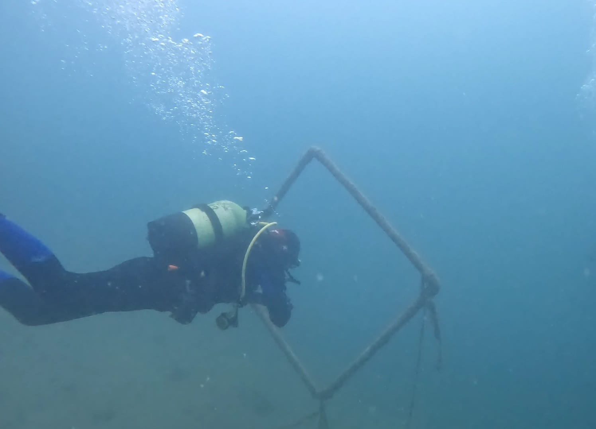

Wer bin ich?
Mein Name ist Pascal Oestrich.
Ich bin im Jahr 2004 geboren worden und lebe seit meiner Geburt im schönen, kleinen Dorf Schneisingen.
Ich bin ein Mensch, der gerne draußen ist. Ich mache viel Sport und bin in Vereinen tätig.
Meine Hobbys
Ich bin in vielen Bereichen sehr interessiert.
In meiner Freizeit treibe ich viel Sport und beschäftige mich gerne mit dem Universum, unserem Sonnensystem und der Astrophysik. Ebenso mag ich es zu programmieren.
Es macht mir sehr viel Spaß und bereitet mir eine große Freude.
Meine Ausbildung
Da mir das Programmieren sehr gefällt und ich ein starkes Interesse an Informatik habe, startete ich im Jahr 2022 meine IMS-Ausbildung.
